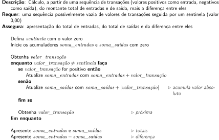

Desenvolvimento de algoritmos para processamento de sequências de dados
Este capítulo estende a discussão do ?@sec-estruturas-algoritmicas-para-processamento-de-sequencias quanto ao uso das estruturas de controle execução repetitiva, apresentando problemas práticos e indicando ações de uso frequente, como contagens e somas, por exemplo.
O contexto principal abordado é o do processamento de sequências de dados, como as caracterizadas na seção ?@sec-caracterizacao-das-sequencias-de-dados, abordando coleções de dados disponíveis como entrada para algoritmo.
Ações simples: contagens e somas
O levantamento de informações a partir de coleções de dados é sempre relevante para análises em nível mais alto. Por exemplo, a determinação do número de estudantes que obtiveram nota zero em um exame do ENEM é um indicador relevante, assim como saber a média das provas de matemática por estado da federação. Da forma similar, a identificação de transações acima de um limite em operações bancárias pode ser um indicador relevante para o mercado e para o governo.
A obtenção dessas informações recai, em última (e simplificada) instância, em ações básicas como contar e somar.
Contagem
A contagem nada mais é que a identificação do número de ocorrências. Para exemplificar, um problema bastante trivial é apresentado: determinar, para uma sequência de idades, a quantidade de crianças, o seja, com até 12 anos incompletos1. A quantidade de idades disponíveis é considerada desconhecida, podendo também ser nula. O Algoritmo 1 apresenta uma solução para processar essa coleção de dados como uma sequência.
Algoritmo 1: Determinação do número de crianças em uma coleção de idades zero ou mais itens (versão com imprecisão).
O uso da estrutura enquanto é relevante, pois controla uma quantidade indeterminada de idades como entrada e trata, também, o caso dessa quantidade ser nula.
Esse algoritmo contém um elemento de imprecisão. No caso, por exemplo, de não haver nenhuma idade abaixo dos 12 anos, a condição do se nunca será verdadeira e nenhuma contagem é feita. Porém, a última instrução explicita que que uma contagem que nunca foi feita deva ser apresentada.
É interessante que, nos algoritmos, essa ambiguidade seja explicitamente resolvida e, para isso, a forma com que a contagem é feita pode ser detalhada, indicando claramente o resultado esperado. O resultado da modificação é o Algoritmo 2
Algoritmo 2: Determinação do número de crianças em uma coleção de idades zero ou mais itens (versão com imprecisão).
Nesta versão, \(\Id{contador}\) é uma variável usada para fazer a contagem, começando explicitamente com zero, o que deixa claro o valor que será apresentado caso não haja nenhuma repetição.
O princípio da contagem é a atualização do valor de uma variável com seu sucessor, de forma que “adicione 1 a \(\Id{contador}\)” significa \({\Id{contador} \gets \Id{contador} + 1}\).
Contadores podem ser aplicados em diferentes cenários de entrada, como sequências com sentinela ou com comprimento conhecido ou previamente informado.
O mesmo problema base (contagem de idades inferiores a 12) pode ter especificação e solução novas se a sequência possuir um valor especial de término (sentinela). O problema passa a ser determinar o número de crianças em uma sequência de idades que possui um valor sentinela igual a -1.
Para esse novo problema, uma solução é apresentada no Algoritmo 3.
Algoritmo 3: Determinação do número de crianças em uma coleção de idades zero ou mais itens com sentinela (versão 1).
Essa solução usa o enquanto para controlar a aparição do valor sentinela. Há uma primeira leitura antes da repetição e, caso já apareça o valor sentinela, não é feita nenhuma repetição e o valor da contagem é zero. Se o primeiro valor for uma idade, ela é verificada para a contagem. Antes de nova verificação no enquanto, o próximo valor da sequência é obtido e, logo em seguida, verificado na condição do enquanto.
O Algoritmo 4 é outra solução para a sequência com sentinela usando repita.
Algoritmo 4: Determinação do número de crianças em uma coleção de idades zero ou mais itens com sentinela (versão 2).
Com o uso da estrutura repita, obrigatoriamente os comandos internos serão executados pelo menos uma vez. Caso a sequência de idades esteja vazia, o valor obtido será o sentinela, o qual é desconsiderado no se e a repetição já se encerra no até que, o que resulta em \(\Id{contador}\) igual a zero. Caso o valor não seja o sentinela, a idade é analisada e o contador incrementado se necessário, implicando em novo ciclo de repetição.
A questão de contagem de idades pode, por exemplo, também ser aplicada a um problema para o qual a quantidade de idades a ser analisada seja predefinido. Supondo agora a contagem de crianças para uma coleção com quantidade fixa de 100 idades, a solução pode ser dada pelo Algoritmo 5. Como o valor é fixo, a estrutura para é empregada para a repetição.
Algoritmo 5: Determinação do número de crianças em uma coleção de 100 idades.
Como outra possibilidade, o problema pode considerar uma sequência para a qual seja informada sua quantidade. Por exemplo, para uma sequência de 10 idades, a quantidade 10 é conhecida antes da repetição. O@alg-quantidade-criancas-sequencia-informada considera que o comprimento da sequência esteja disponível antes de cada idade.
Algoritmo 6: Determinação do número de crianças em uma coleção de idades com zero ou mais itens precedida pela quantidade de itens.
Nesse algoritmo, os requisitos são a quantidade e os valores das idades. Antes da repetição, o número de itens deve ser obtido (variável \(\Id{quantidade}\)) e a repetição, usando um para, executa a obtenção e a análise de cada idade na quantidade de vezes informada.
Nas duas soluções que usam o para, a variável de controle da repetição (\(i\)) é irrelevante para a solução do problema, sendo usada exclusivamente como indicador para o número de execuções.
Somas
No processamento de volumes de dados, os totais também são uma informação de interesse comumente usada. Por exemplo, nas transações de venda de um estabelecimento, saber o valor total de vendas em um dia pode ser relevante. Também são importantes os volumes de chuva ao longo de um dado período, obtido pela soma das precipitações diárias. Assim, somas são o tema desta seção.
Para explorar somas em sequências, o princípio é similares ao das contagens da Seção 1.1.1, com o reuso de uma variável com a função de acumular valores. Por exemplo, as instruções seguintes ilustram uma forma de reuso para uma soma.
Esta sequência de ações gradativamente calculam \(12 + 18 + 31\).
O problema exemplo a ser resolvido agora envolve a apresentação das entradas e saídas de um caixa ao longo do dia. Cada transação feita é registrada por um valor em reais, sendo valores positivos indicativos de entrada de dinheiro no caixa e, em consequência, valores negativos, as saídas. Como transações com valor nulo não fazem sentido neste contexto, o valor R$0,00 é usado como sentinela para indicar o fim da sequência de valores de transações. O objetivo é apresentar o total de entradas e de saídas, além da diferença entre eles.
Uma solução para esse problema está descrita no Algoritmo 7.
Algoritmo 7: Cálculo do montante de entrada e de saída a partir de uma sequência de valores de transações (com sentinela).

A estratégia de varredura dos valores das transações é o mesmo do Algoritmo 3, com a obtenção do primeiro valor antes do enquanto e a obtenção de cada sucessor no final, antes de nova verificação da condição.
A iniciação dos somadores \(\Id{soma\_entradas}\) e \(\Id{soma\_saídas}\) é feita com zero. A cada transação, um ou outro tem seu valor aumentado pelo montante da transação atual.
Mínimos e máximos
Valores extremos são itens usualmente buscados em coleções de dados, como, por exemplo, a transação de maior valor no mercado imobiliário ou a idade mínima para um conjunto de pessoas.
A estratégia por trás da determinação dos valores mínimo e máximo é simples. Na procura pelo valor mínimo, cada novo valor é comparado ao mínimo atual e, sendo menor, o mínimo atual é atualizado. Situação análoga ocorre com o valor máximo, substituído apenas quando encontrar um valor maior. Algoritmicamente, essa verificação para o valor mínimo pode ser escrita como indicado na sequência.
Uma questão que surge é sobre qual deve ser o valor inicial da variável quem mantém o mínimo ou o máximo. A resposta, naturalmente, é que a variável deve ser iniciada com um valor que garanta que as substituições ocorram corretamente.
Uma estratégia segura é sempre adotar o primeiro valor como o valor extremo, seja ele o mínimo ou o máximo, e depois verificar os demais itens.
O problema para exemplificar a localização dos extremos é a determinação, para um coleção de idades, qual o mínimo e o máximo. As idades estão disponíveis em uma sequência precedida por sua quantidade e há pelo menos um valor na sequência.
Algoritmo 8: Determinação da idade mínima e máxima em uma coleção de idades precedida pelo número de itens.
Uma alternativa comum é iniciar com valores que certamente serão substituídos, como apresentado no Algoritmo 9.
Algoritmo 9: Determinação da idade mínima e máxima em uma coleção de idades precedida pelo número de itens.
Nesta solução, qualquer que seja a primeira idade, ela certamente será menor que \(+\infty\) e maior que \(-\infty\), forçando as substituições de \(\Id{idade}_{min}\) e \(\Id{idade}_{max}\). No caso de idades, as iniciações poderiam ser, respectivamente, com 200 anos (com uma boa folga) e -1, ambos valores fora do intervalo de idades aceitável.
Derivações
Em decorrência de contagens e somatórios, outros cálculos seguem diretamente, com médias e porcentagens.
Médias
O cálculo de uma média consiste na soma dos valores seguida da divisão pela quantidade. Na prática, é um somatório e uma contagem seguida do cálculo da razão entre eles.
Supondo que o problema seja o processamento de uma sequência simples de pontuações, todas de 0 a 100, e se deseja a pontuação média. O Algoritmo 10 apresenta uma solução para o problema, considerando que a sequência de entrada contém pelo menos uma pontuação.
Algoritmo 10: Determinação da pontuação média para uma coleção de pontuações.
Porcentagens
Para porcentagens é preciso ter uma quantidade de ocorrências específicas e dividir esse valor pelo número total de ocorrências. Basicamente, contam-se as ocorrências específicas o e o total, realizando a divisão de um pelo outro na sequência.
Supondo uma sequência de pontuações (de 0 a 100) e desejando-se saber a porcentagem das pontuações no intervalo [90, 100], uma solução algorítmica pode ser dada pelo pseudocódigo do Algoritmo 11.
Algoritmo 11: Determinação, para uma coleção de pontuações, a porcentagem de pontuações de 90 a 100.